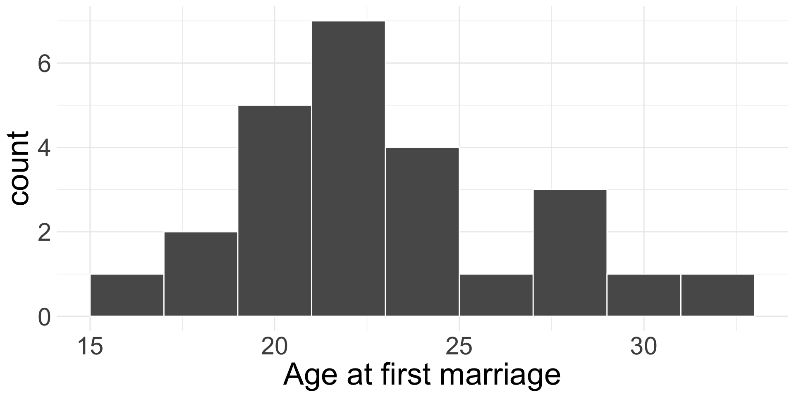
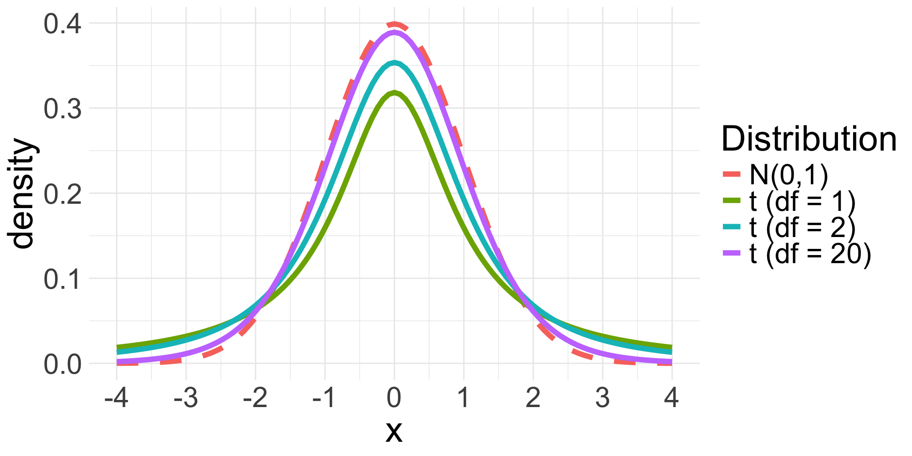
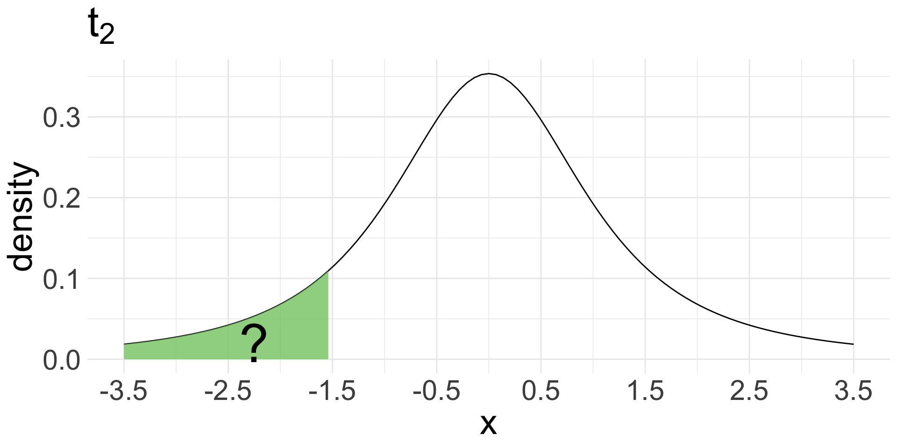
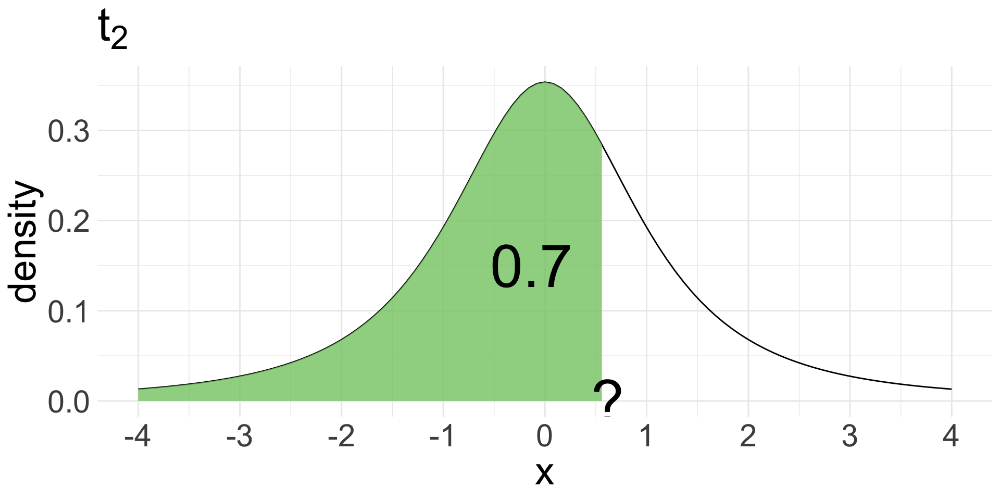
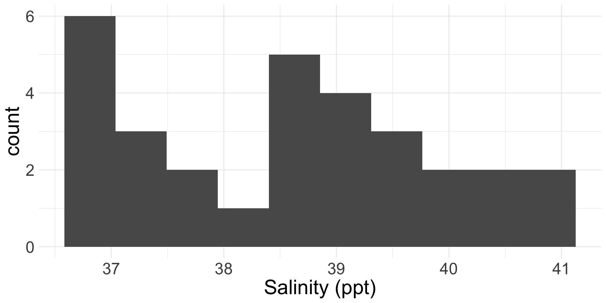

CLT-based
4/14/25
Dessert social today! 3-4:30pm in WNS 105!
Modified office hours today: 1:30-2:30pm instead of 2-3pm
Homework 7 due tonight
Project proposals due Wednesday night
CLT: if we have a sufficiently large sample of \(n\) independent observations from a population with mean \(\mu\) and standard deviation \(\sigma\), then \(\bar{X} \overset{\cdot}{\sim} N\left(\mu, \frac{\sigma}{\sqrt{n}}\right)\)
To obtain a \(\gamma\times 100\%\) CI via CLT, we use
\[ \text{point estimate} \pm \text{critical value} \times \text{SE} \]
Remember, CLT requires a sufficiently large sample size \(n\) or assumption of Normality of the underlying data.
No perfect way to check Normality, but rule of thumb:
If \(n < 30\) small: check that there are no clear outliers
If \(n \geq 30\) large: check that there are no particularly extreme outliers
Suppose we want a \(\gamma\times 100\%\) CI for population mean \(\mu\).
If CLT holds, then we know
\[ \bar{X} \overset{\cdot}{\sim} N\left(\mu, \frac{\sigma}{\sqrt{n}}\right) \]
So our \(\gamma \times 100\%\) CI for \(\mu\) is:
\[ \text{point estimate} \pm \underbrace{\text{critical value} \times \text{SE}}_{\text{Margin of Error}} = \bar{x}_{obs} \pm z_{(1+\gamma)/2}^* \times \frac{\sigma}{\sqrt{n}} \]
In 2006-2010, the CDC conducted a thorough survey asking US women their age at first marriage. Suppose it is known that the standard deviation of the ages at first marriage is 5 years. Suppose we randomly sample 25 US women and ask them their age at first marriage (plotted below). Their average age at marriage was 23.32.

What is/are the population parameter(s)? What is the statistic?
We will obtain an 80% confidence interval for the mean age of US women at first marriage.
Are conditions of CLT met?
If so, what does CLT tell us?
Obtain an 80% confidence interval for the mean age of US women at first marriage.
\[\bar{X} \overset{\cdot}{\sim}N\left(\mu, \frac{5}{\sqrt{25}}\right) = N(\mu, 1)\]
qnorm(0.9, 0, 1) \(= 1.28\)So our 80% confidence interval is \(23.32 \pm 1.28 \times 1 = (22.04, 24.6)\)
The previous formula for the confidence interval for \(\mu\) relies on knowing \(\sigma\)
But wait…
Want to construct a CI for \(\mu\) because we don’t know its value
If we don’t know \(\mu\), it seems highly unlikely that we would know \(\sigma\)!
So in practice, we will have to estimate standard error for \(\bar{X}\):
\[ \widehat{\text{SE}} = \frac{s}{\sqrt{n}} \]
where \(s\) is the observed sample standard deviation
Estimating variance is extremely difficult when \(n\) is small, and still not great for large \(n\)
So if \(\sigma\) is unknown, we cannot use the Normal approximation to model \(\bar{X}\) for inferential tasks
Instead, we will use a new distribution for inference calculations, called the \(t\)-distribution
The \(t\)-distribution is symmetric and bell-curved (like the Normal distribution)
Has “thicker tails” than the Normal distribution (the tails decay more slowly)

Rpnorm(x, mean, sd) and qnorm(%, mean, sd) used to find probabilities and percentiles for the Normal distribution
Analogous functions for \(t\)-distribution: pt(x, df) and qt(%, df)

pt(-1.5,df =2) = 0.1361966

qt(0.7, df =2) = 0.6172134
Still require independent observations and the Normality condition for CLT
General formula for \(\gamma \times 100\%\) CI is the same, but we simply change what goes into the margin of error.
\[ \text{point estimate} \pm t^*_{df, (1+\gamma)/2} \times \widehat{\text{SE}} = \bar{x}_{obs} \pm t_{df, (1+\gamma)/2}^* \times \frac{s}{\sqrt{n}} \]
\(df = n-1\) (always for this CI)
critical value \(t^*_{df, (1+\gamma)/2}\) = \((1+\gamma)/2\) percentile of the \(t_{df}\) distribution
Let’s return to the age at marriage example. Once again, obtain an 80% CI for the average age of first marriage for US women, but now suppose we don’t know \(\sigma\).
In our sample of \(n = 25\) women, we observed a sample mean of \(23.32\) years and a sample standard deviation of \(s = 4.03\) years.
qt(0.9, df =24) = 1.32So our 80% confidence interval for \(\mu\) is:
\[ 23.32 \pm 1.32 \times 0.806 = (22.26, 24.38) \]
Interpretation of CI does not change even if we use a different model!
If you have access to both \(\sigma\) and \(s\), would should you use?
Want to conduct a hypothesis test for the mean \(\mu\) of a population.
Hypotheses: \(H_0: \mu= \mu_{0}\) versus \(H_{A}: \mu \neq \mu_{0} \ (\text{or } \mu > \mu_{0} \text{ or } \mu < \mu_{0})\)
Verify conditions for CLT
Then from population with mean \(\mu\) and standard deviation \(\sigma\), we have \(\bar{X} \overset{\cdot}{\sim} N\left(\mu, \frac{\sigma}{\sqrt{n}}\right)\)
What does the (approximate) null distribution for \(\bar{X}\) look like?
\[ \bar{X} \overset{\cdot}{\sim} N\left(\boldsymbol{\mu_{0}}, \frac{\sigma}{\sqrt{n}}\right) \]
Our test statistic is always of the form:
\[ \frac{\text{observed} - \text{null}}{\text{SE}} \qquad \text{ or } \qquad \frac{\text{observed} - \text{null}}{\widehat{\text{SE}}} \]
\[z = \frac{\bar{x}_{obs} - \mu_{0}}{\frac{\sigma}{\sqrt{n}}} \sim N(0,1)\]
and we obtain our p-value using pnorm()
\[ t = \frac{\bar{x}_{obs} - \mu_{0}}{\frac{s}{\sqrt{n}}} \sim t_{df} \qquad df = n-1 \]
and we obtain our p-value using pt()
The salinity level in a body of water is important for ecosystem function.
We have 30 salinity level measurements (ppt) collected from a random sample of water masses in the Bimini Lagoon, Bahamas.
Set hypotheses (define parameters as necessary).
Let \(\mu\) be the average salinity level in Bimini Lagoon in ppt.
\(H_{0}: \mu = 38\) versus \(H_{A}: \mu \neq 38\)
\(\bar{x}_{obs} = 38.6\)
\(s = 1.29\)
\(n = 30\)
\(\alpha = 0.05\)
Conditions:
Independence: random sample
Approximate normality: \(n = 30\), but no clear outliers
So by CLT, null dist. is \(\bar{X} \overset{\cdot}{\sim} N\left(38, \frac{\sigma}{\sqrt{30}}\right)\)
Since we don’t know \(\sigma\), we perform a \(t\)-test and obtain the following test-statistic:
\(t = \frac{\bar{x}_{obs} - \mu_{0}}{\widehat{SE}} = \frac{38.6 - 38}{1.29 / \sqrt{30}} = 2.543\)
This test-statistic follows a \(t_{29}\) distribution
Since our p-value 0.017 is less than 0.05, we reject \(H_{0}\).
The data do provide sufficient evidence to suggest that the average salinity level in Bimini Lagoon is different from 38 ppt.
Let’s code it up together!